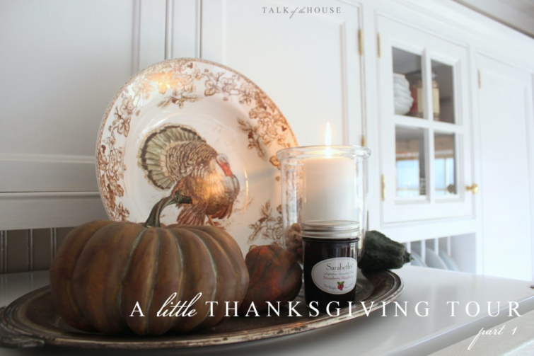
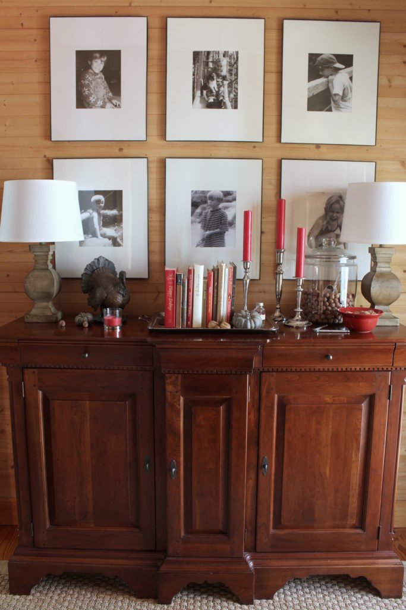

.png)
.PNG)
.PNG)
.PNG)
.PNG)
.PNG)
.JPG)
.JPG)
.PNG)
.PNG)



Hi friends! I hope you are finishing up your to-do list of things to get ready for this week’s big holiday. Right now our home is in split-personality mode with all the bedrooms decked out for Christmas and the living areas ready for Thanksgiving Day. So if you come in our front door, you will see the foyer wearing turkeys and pumpkins. (But if you want Christmas trees, you will need to go down the hallway in the other part of the house. 🙂 )

I am going to be in Vermont for a week in December, so a head start was needed in order to get all the Christmas things done in time, but I certainly wasn’t going to overlook wonderful Thanksgiving Day!
We ventured on a hiking trip with a couple of friends last month, and one of the guys generously brought us a sack full of pecans. I’ve decorated with nuts before for Thanksgiving, and that sack of pecans inspired me to use them once again. (Thanks Jim!)

As you can see, I am using a red and brown color scheme once again this year. The nuts automatically called for brown, and I am wanting to make an easy transition to Christmas in the rest of the house. Naturally red was the perfect choice for that.

Red and brown make for such a warm and cozy color scheme, and Thanksgiving just seems to be a time for that. In most places the weather has turned cold. (It will even be that way here in Georgia this week! Yay!)

It makes you want to eat comfort food, gather with friends and family around a cozy fire, and just soak up in fellowship together.

I’ve rearranged the furniture in the family room (twice!) Even though the sofa doesn’t photograph as well in its new location, the space seems like it is actually more cozy. The seating pieces are all drawn closer together….giving it a more intimate feel.


I didn’t purchase a single new item for this year’s Thanksgiving decor. The big red storage box came down from the attic, and all the turkeys and pumpkins got scattered about.

This little turkey always adds a nice touch for the holiday.


Even Gabbie likes snuggling up by the fire this time of year. 🙂

I was going to end the post here since I said this was to be a “little” tour, but let’s just take a peek in the kitchen before we leave.

The black checked drapes are back in the closet, and my favorite red checked ones are out again. (Since I get asked so much about the source of them, here you go: I made the drapes, and the fabric is the 4 inch red check available at Forsyth Fabrics in Atlanta. )


With the cooler weather and the holidays beginning, all our coffee makers and that big percolator are really put to frequent use this time of year. In fact, last Thursday I bought the ingredients to make my favorite hot Christmas percolator punch (recipe link here) and I think it will be great to have on Thanksgiving Day. Besides having a delicious flavor, it makes the house smell absolutely wonderful. 🙂

And that does bring us to the end of this part of “the little Thanksgiving tour.” I’ll be back early in the week with Part 2 to share the dining room and the porch. Until then, I hope you have some time this weekend to snuggle in by a fire or perhaps under a cozy quilt…time to take a deep breath before we all dive into this holiday season…time for counting blessings and being thankful. 🙂

Have a beautiful weekend friends!
Until next time…


.PNG)
Hi Kelly,
I hope your family had a wonderful Thanksgiving. Your home looks so inviting. I had to comment when I read that your family also enjoyed pimento cheese on celery sticks. I have never heard of any other family serving this special treat. It was my Dad’s favorite and something my mother made for him to “tide” him over until the meal was finished. I lost my Dad three years ago on Thanksgiving day and my mom in March of this year. I try to incorporate the memories and special dishes from both sides of the family for my sons. Sadly, they have not developed a taste for the Waldorf salad my grandfather and father in law prepared or the Watergate salad my mom made that I loved but they do love green bean casserole. Have a wonderful Christmas!
Kelly, I so enjoyed your wonderful memories of Thanksgiving… And thank you for showing your dining room and porch..two of my favorite places! 😊
Good Morning… WOW… I was so excited to see a post from Talk of the House in my inbox!!! Still … so love your home!!!! excited to see your Christmas post !!! Happy Thanksgiving to you & yours !!!
I just love your cozy home!! Those drapes are awesome, I can’t believe you made them….I can barely sew on a button, it’s just not a talent I possess, oh well. Did you make those really long ones also? I thought maybe they were from Country Curtains…who is sadly going out of business. Have a happy Thanksgiving!!
So lovely to have a post from you. Missed you. All beautiful as always. Have a wonderful Thanksgiving. We are sweltering here in Durban S.A so enjoy the cool weather.
Kelly,
Your home looks lovely as usual. Gabbie looks like she is thankful for the ottoman and fire as well. Thanks for sharing! I always appreciate seeing and reading about others thankfulness this time of year as I have much to be thankful for as well. I can’t wait to see what else you have in store for us. Take care.
Dawn
I always am inspired by your posts! Thank you so much and your Thanksgiving décor is beautiful! Happy Thanksgiving!
Happy Thanksgiving, Kelly. Your autumn touches are perfect. I love the red and brown! We’re enjoying family visiting from Austin, lots of good food and fun.
xo,
Karen
So good to hear from you Kelly … and see your home ready for Thanksgiving. Looking gorgeous, as usual. How wonderful to be visiting Vermont in December. Hope you get chance to write about it! Hope alls progressing well with your home. I did get chance to relax yesterday but not in front of the fire … not quite cold enough, yet. ..although snow predicted in a few weeks! Lots of snow on the mountains in Switzerland, where I’m hoping to be in January.
Take care, Kelly, safe travels and Happy Thanksgiving.
Rosemary
Such a beautiful post! I would love for you to link up this post or any other fall posts at the Farewell Fall Blog Hop! Have a great Thanksgiving!
https://followtheyellowbrickhome.com/farewell-fall-link-party/
I just checked, knowing you wouldn’t leave us for Thanksgiving without a post. GREAT you are here!
Can’t believe how that dog has grown.
Please give us an update on the kids
Update on mother-in-law
Update on your parents
Did you meet your challenge to complete your home improvements?
HOW is Kelly?
Happy Thanksgiving!
I got so excited when I saw on Instagram that you had a Thanksgiving post!I was away from my computer and saved it until I got home. (It is just not the same on my phone.) You ALWAYS inspire me. I like that you were able to decorate without having to buy anything new. I love your Williams Sonoma turkey plates. They are 60% off in the outlet but I bought the Pottery Barn turkey plates last year….so I had to smack my hands not to buy. Your house looks all warm and cozy and beautiful. Gabby looks pretty in your photos. I think I have told you my son-in-law has the same breed. I am looking forward to Part 2 and a post about your trip to Vermont. That sounds wonderful! Happy Thanksgiving!!!!
As usual your house is lovely Kelly. You put so much thought into your decorating and it is always just right…never over done. I love that. Happy Thanksgiving.
Happy Thanksgiving Kelly! I always love seeing your blog posts in my email. Thank you for a dose of Thanksgiving decorating inspiration! Can’t wait to see your Christmas decorating!
Your red check kitchen curtains inspired me to hang said same red check curtains in our kitchen! Just an FYI: Country Curtains is going out of biz (sad!), so their check curtains + accessories are on sale, if any of them are left.
Hi Kelly ~ If you’re going to Vermont, I hope you have time to stop in Bennington, my old hometown in the southwest corner. You would love the picturesque quality to Old Bennington with it’s Old First Church built in 1805 and large white colonial homes lined up in a row on Monument Avenue. Wherever you go, you almost can’t avoid seeing and traveling across an old covered bridge. There are 3 of them in Bennington. There is also a great little museum there with the largest collection of Grandma Moses paintings in the world. (I’m sounding like the Chamber of Commerce now, LOL!)
Anyway, be sure to bring back some “real” Vermont maple syrup and some Vermont cheddar cheese. The smoked one is especially good. Enjoy your trip but meanwhile Happy Thanksgiving!
Everything looks lovely as always. Gabby is adorable sitting by the fire. Vermont, I am so jealous. I have always wanted to go there. Can’t wait to see your pictures.
Happy Thanksgiving Kelly! I like your red and brown theme and the rearranged den. Gabby is so beautiful!!! Take care. Your friend in Cincy, Julia~Southern born, Southern bred, turnip greens by my bed.
Kelly,
Your house looks so pretty. Happy thanksgiving! A trip to Vermont sounds wonderful and I hope we all get to hear all about it. I will have to try the Christmas Punch.
DiAnne
Really cute !! LOVE all your jars full of goodies !!
As a native Vermonter now let bing life as a Flatlander in Massachusetts I am jealous of your trip to Vermont. I hope you will post to let us know where you go and what you do. I love living vicariously.
Happy Thanksgiving🦃🦃🦃
Happy Thanksgiving to you and your family! Your home looks so inviting for the holiday! Enjoy!
Lovely! Thanks for posting. And Happy Thanksgiving. N from VA
Your home always looks so cozy and inviting! Thank you for sharing. Happy Thanksgiving to you and your family!
Happy Thanksgiving to you and your family. It is so good to get to visit in your lovely home for the start of tbe holiday season. Thank you for the post and I hope you have a wonderful Thanksgiving and trip to Vermont 🦃🍂
Your home always looks so festive decorated for each holiday! You have the magic touch 🙂 I cannot believe how much Gabby has grown and such a beautiful fur baby!! Happy Thanksgiving!
Just happened upon your blog!What a great treat on this Saturday evening as I am checking off my “To Do” list and revising and tweaking! If you are going to Vermont you must go on that one horse open sleigh ride you’ve always wanted to do!! Right? Hope it snows so you can! I still remember mine back in Ky back in the early 60’s. Looking forward to Part 2 of your Thanksgiving blog. 💕🙏💕